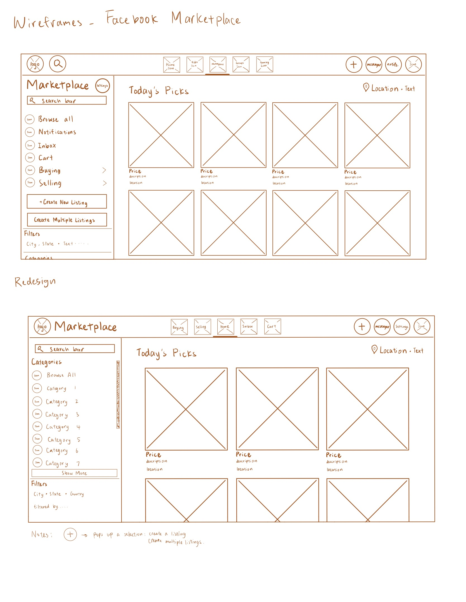

-
Using the favorite website you chose in homework 1, create a wireframe for one page of it using pen/paper, PowerPoint, or any your tool of choice. (use the 'img' tag!) Make sure to let us know what the name of your website is (Use the 'p' tag!)

-
Try to improve the website you've chosen, and create a redesigned wireframe of one page for the same website using the principles of visual hierarchy that you learned from the article.
-
What is the goal of the website? Who is it intended for? How does the design accomplish this? Write 2-3 sentences answering these questions. (Use the 'p' tag again!)
The goal of this website is to provide a platform for Facebook users to operate an online marketplace of their own, instead of having to own a shop or store. It is intended for people who have things, new or used, that they want to sell, but cannot find another medium to do so. Or they would simply just want to give it out for free. The design helps with the purpose because it emphasizes the pictures that were provided for the items, as well as providing multiple functions like communications and categorical sorting.
-
Write 2-3 sentences about what problems your redesign addressed, and how it solved them.
Basically, instead of having Marketplace be a tab of the Facebook website, I turned it into its own separate website, so that the nav bar on top can include the necessary buttons and icons instead of them just shoving everything into the side bar. This way, things aren't as cluttered and hectic, and it doesn't have things to redirect you to a different page of Facebook, like the groups page and the gaming page. Additionally, following the Instagram profile overview layout, I made it so that you can only see 3 listings per row, which helps for the reader to process less information in one place.
NOTE: Make sure to include the wireframe images in the website and don't just put it in your assets folder!
Your wireframes should look something like this: